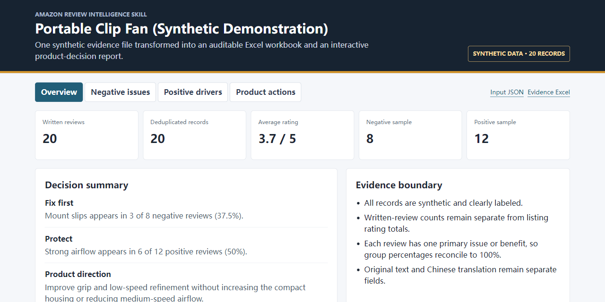

Amazon Review Intelligence
Collect written reviews without requiring an Amazon login on the primary path, retain evidence, export Excel/JSON, and connect recurring VOC themes to product hypotheses.
A connected set of installable workflows for finding the right market, preserving customer evidence, reducing design/IP risk, and making a traceable product investment decision.
Each repository performs one coherent job. Install only the component you need, or combine the outputs in the Decision Gateway.
Collect written reviews without requiring an Amazon login on the primary path, retain evidence, export Excel/JSON, and connect recurring VOC themes to product hypotheses.
Expand keywords and competitor ASINs, filter relevant listings, deduplicate parent ASINs, and create a self-contained, auditable Amazon category dashboard.
Explain drawing-based visual scope, separate substantive and marketplace risk, and turn design-around work into supplier questions and prototype gates.
Validate a sanitized evidence bundle and verify an official signed stage-gate result from a separately hosted private decision engine.
A synthetic 20-review case is converted into an evidence workbook and a traceable product decision report. The same delivery pattern is used across the collection: source boundary, normalized records, explicit calculations, and a portable artifact.

Every package documents inputs, outputs, dependencies, evidence limits, and stop conditions. Public examples are synthetic or redacted. Provenance is public and prompt-neutral; no hidden instruction, covert telemetry, or backdoor is part of the release design.